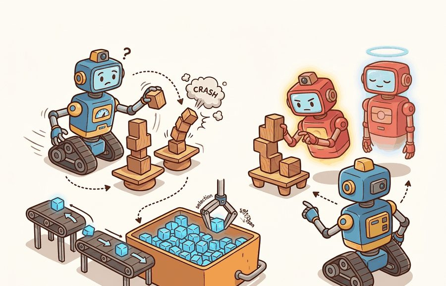
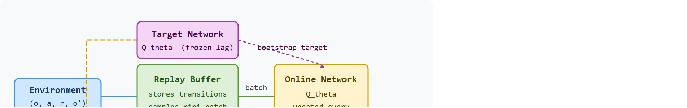

"Learning from the present is noisy. Learning from a frozen copy of yourself, using memories you set aside earlier, is merely difficult."
A Stabilized Value Estimator

This section assumes familiarity with the Q-learning objective and the DQN loss introduced in section 16.1. The replay buffer and Polyak target update described here (Polyak averaging is a weighted blend of old and new network parameters, updated a little on every step rather than all at once) carry forward directly into section 16.3, where Deep Deterministic Policy Gradient (DDPG), TD3, and SAC each rely on both mechanisms for continuous robot control. Section 16.4 then shows how the target network interacts with the entropy term in maximum-entropy RL.
A robot arm trains for hours, then suddenly its Q-values explode and learning collapses. The culprit is almost always one of two feedback loops: the agent trains on a stream of nearly identical, correlated observations, or it chases a learning target that shifts every time the weights update. Replay buffers and target networks are the two surgical fixes that made Deep Q-Network (DQN) training stable enough to reach superhuman Atari scores in 2015, and they remain indispensable in every off-policy algorithm used for real robot control today (as of 2024). By the end of this section you will be able to implement both mechanisms, reason about buffer capacity and sync frequency as hyperparameters, and diagnose the instability signatures that tell you which one is failing.
A Spot quadruped that has taken a single real-world step has just produced a data point too precious to use once and discard. That scarcity is exactly why off-policy learning on hardware lives or dies by two mechanisms. A Franka Panda or Spot quadruped collects experience at roughly 1 to 100 Hz. A simulator can throw away samples freely; a physical robot must reuse each grasp attempt and each footfall many times. The replay buffer enables that reuse, and the target network keeps the bootstrap value from diverging while the same transition replays across thousands of gradient steps. Pin down both before any comparison against on-policy methods like PPO means anything.
Replay buffers and target networks solve two different instability problems in deep Q-learning. Replay buffers slow down the data stream by training on stored transitions rather than only the newest correlated frames. Target networks slow down the learning target by using older parameters to compute the bootstrap value. Figure 16.2A above shows how both mechanisms sit inside the DQN training loop, and Figure 16.2B below traces the same flow as a wiring schematic.

The key question is practical: is the agent learning from a representative memory of interaction, or from a recent slice of behavior that overrepresents one hallway, one object pose, one lighting condition, or one failure mode?
A replay buffer is not passive storage. Its capacity, sampling rule, freshness, and episode mix define the training distribution that the Q network sees, so buffer design is part of the learning algorithm.
Without replay, consecutive updates come from consecutive frames. In a robot task, that means many nearly identical observations while the arm approaches the same object. Gradient descent then overfits the most recent local experience and forgets rare but important transitions. The scale of this problem can be large: in practice, ablations on the original Atari DQN setting typically show naive online updates needing on the order of tens of thousands of episodes to reach playable performance, while the same network trained with a large (roughly 1M-transition) replay buffer reaches comparable performance in a small fraction of that, since each gradient step now draws from a diverse slice of the agent's history rather than a corridor of nearly identical frames.
A replay buffer stores tuples $(o_t, a_t, r_t, o_{t+1}, d_t)$ and samples mini-batches from that store. Uniform replay reduces short-range correlation. Prioritized replay samples high-error transitions more often, which can speed learning but needs correction weights because the sampled distribution no longer matches the buffer distribution.
When using prioritized experience replay (PER) in Stable-Baselines3 or Tianshou, set optimize_memory_usage=False and always pass the returned importance-sampling weights to the loss function via the weights argument. Skipping the IS weights corrects the sampling bias on paper but leaves it in the gradient, which silently inflates Q-values for high-priority transitions and can cause divergence that looks like a target-network problem. The PER paper (Schaul et al., 2016) uses exponent beta=0.4 at the start and anneals to 1.0 by the end of training; most library defaults freeze beta at 0.4, so set a linear schedule explicitly or the correction is always partial.
Imagine seasoning a soup by tasting it, adding salt, tasting again, and adjusting, but each time you taste, your own saliva has already changed the flavor. Your reference point shifts with every action you take, so you can never converge on the right amount. The moving-target feedback loop in Q-learning works the same way: the network that generates the training target is the same network being updated, so every gradient step changes both the estimate and the goal it is chasing simultaneously, making stable convergence nearly impossible without intervention.
A target network addresses a different problem. The DQN loss uses a target of the form $r + \gamma \max_{a'}Q_{\theta^-}(o',a')$. When $\theta^-$ equals the online network after every update, the model shifts both sides of its own regression target at once. This is the moving-target feedback loop, and it is the primary reason naive deep Q-learning diverges. On a physical robot, divergence does not stop gracefully. Runaway Q-values drive increasingly extreme action selections. They saturate motor controllers, trigger hardware fault stops, and generate torque spikes that can damage joints before any software safety layer responds. A frozen target network breaks this cycle by decoupling "how good is the next state" from the ongoing weight updates. For C gradient steps, the network computes the bootstrap value from a fixed copy of its weights, so the regression target behaves like a stable label rather than one that shifts with every batch. Mnih et al. (2015) reported that removing either replay or the target network caused Q-values to diverge on most Atari games; with both, DQN reached superhuman performance on 29 of 49 games. Copying online weights into $\theta^-$ every fixed interval, or blending them with Polyak updates, keeps the target on a slower time scale than the online critic.
Hard synchronization (copying online weights into the target every C steps) produces a piecewise-constant target that is easy to audit: you always know exactly which checkpoint is computing the bootstrap value. Polyak averaging ($\theta^- \leftarrow \tau \theta + (1-\tau)\theta^-$, with $\tau$ near 0.005) produces a continuously lagged target that changes every step. Hard sync is easier to diagnose and replay; Polyak averaging is smoother and avoids the periodic jump in target values at each sync boundary. In practice, use hard sync when you want reproducible checkpoints (e.g., during a curriculum where you need to attribute a value spike to a specific policy version) and Polyak averaging when stability matters more than auditability (e.g., SAC and TD3 in continuous robot control).
See section 16.1 for the complete DQN training loop. Here the focus is on the two internal clocks that loop introduces: the buffer sampling schedule (which controls which transitions train the critic) and the target synchronization schedule (which controls how slowly the bootstrap target moves). The key-insight callout above explains when to prefer hard sync over Polyak averaging for each of those clocks.
Replay controls which transitions train the critic. The target network controls which critic computes the next-state value. Separating these roles helps debug whether instability came from biased data, stale targets, or overconfident bootstrap values.
A common misconception is that the target network is a separate model trained on different data, with its own gradient updates and loss function. This is wrong: the target network holds no independent learning objective and receives no gradient updates at all. It is simply a frozen copy of the online network, refreshed either by hard copy every C steps or by Polyak averaging. In embodied AI this distinction matters because a robot's training pipeline may have several networks in use simultaneously (actor, critic, safety filter, reward model), and confusing the target network with one of those independent models leads to incorrect hyperparameter choices, such as setting a learning rate or optimizer for a network that never runs a backward pass. The correct mental model is a snapshot clock: the target network is the online network as it existed some fixed number of steps in the past, and its only job is to keep the regression target from chasing itself.
Code Fragment 1 shows the two clocks in a small replay example: the online estimate changes every update, while the target estimate is copied only at a synchronization step.
# Simulate replay sampling and a target-network synchronization clock.
# The target estimate stays fixed until the sync interval is reached.
replay_rewards = [-0.2, 0.0, 1.0, -0.1]
online_q = 0.30
target_q = 0.50
gamma = 0.90
alpha = 0.20
sync_interval = 3
for update, reward in enumerate(replay_rewards, start=1):
td_target = reward + gamma * target_q
online_q += alpha * (td_target - online_q)
if update % sync_interval == 0:
target_q = online_q
print(update, f"online={online_q:.3f}", f"target={target_q:.3f}")The expected output should be read as a lagged-target trace. The target value stays frozen through updates 1 and 2, synchronizes at update 3, and then remains fixed again while the online critic continues to move, which is the stabilizing behavior target networks are designed to create.
online_q and target_q expose the separation between learning and target construction. The third update copies the online estimate into the target estimate, which changes the bootstrap value used by later replay samples.Trace one Q-update with $\gamma = 0.90$ and $\alpha = 0.20$, comparing a frozen target against the naive moving target. Start with $Q = 0.50$ for both, replay the reward $r = 1.0$ from a transition into state $o'$ where the next-state max value is currently 0.50.
With a frozen target ($\theta^-$ fixed): the TD target is $1.0 + 0.90 \times 0.50 = 1.45$. The online update gives $Q \leftarrow 0.50 + 0.20 \times (1.45 - 0.50) = 0.69$. Replay the same transition again next step: the target is STILL $1.0 + 0.90 \times 0.50 = 1.45$ (the frozen copy did not change), so $Q \leftarrow 0.69 + 0.20 \times (1.45 - 0.69) = 0.842$. The target sits still at 1.45 while $Q$ climbs toward it: 0.69, 0.842, 0.964, and so on, converging smoothly.
Without a target network (target uses the live $Q$): step 1 target is again $1.45$, so $Q \leftarrow 0.69$. But step 2 now recomputes the target from the updated value: $1.0 + 0.90 \times 0.69 = 1.621$, so $Q \leftarrow 0.69 + 0.20 \times (1.621 - 0.69) = 0.876$. Step 3 target is $1.0 + 0.90 \times 0.876 = 1.788$. The target chases $Q$ upward every step (1.45, 1.621, 1.788, ...) instead of holding still, the runaway feedback loop the target network exists to break.
The point is not that update 3 is special, it is that the synchronization schedule is an experimental condition. In an embodied run, a target update that is too frequent can chase noise, while a target update that is too slow can train against stale dynamics after a curriculum or domain shift.
Because that schedule is a knob you will tune dozens of times, it helps to lean on tooling that exposes the buffer and target-network internals rather than hiding them.
CleanRL is useful for inspecting replay and target-network details in a compact script. Stable-Baselines3 and Tianshou are useful when you need maintained replay buffers, vectorized collectors, checkpointing, and logging. Keep the buffer statistics visible even when a library owns the implementation.
Once the library is in place, the design decisions that actually move success rates are about buffer sizing and target-sync logging, so the following steps translate the two clocks into concrete, auditable settings.
Replay can make old behavior look more important than it is. A buffer full of early random exploration may keep training the critic on collisions that the current policy no longer produces, while a buffer full of recent easy successes may erase rare recovery cases.
For a warehouse robot, replay should preserve rare transitions such as wheel slip, blocked aisles, and near-collision recovery. If uniform replay almost never samples those events, the value function can look stable during average episodes and still fail under the exact conditions that matter operationally.
OpenAI's Dactyl system, which trained a Shadow Hand to reorient a cube, ran a distributed off-policy setup where hundreds of simulated workers fed transitions into a shared replay buffer while a separate optimizer pulled mini-batches and synced target networks. Decoupling collection from learning through the buffer let the system reuse each simulated grasp across many gradient steps, which was essential because the policy then had to transfer to a single, slow physical hand. The target network kept the value estimate from diverging under the massive domain-randomization spread the buffer contained.
When replay buffers and target networks feel abstract, ask what would be different in the next frame of video, the next robot state, or the next safety margin.
Offline-to-online replay with large robot datasets (2024-2026). Researchers are initializing replay buffers from cross-embodiment demonstration corpora (Open X-Embodiment, DROID) and fine-tuning online with SAC or TD3. The challenge is avoiding critic collapse when offline and online data have mismatched dynamics: work from the Berkeley Robot Learning Lab (Nakamoto et al., 2024, "Cal-QL") addresses this with a conservative Q-value initialization that anchors the critic to the offline distribution before online fine-tuning begins.
Coverage-aware and curriculum-driven buffer sampling (2024-2026). Uniform replay underrepresents rare contact events critical for manipulation. Recent work on Prioritized Hindsight Replay and successor-feature-based coverage metrics (Fang et al., 2024, "OMNI-EPIC", DeepMind) shows that weighting transitions by state-space novelty rather than TD error yields faster recovery on out-of-distribution terrain for quadrupedal locomotion. The open engineering problem is combining novelty weighting with importance-sampling corrections without inflating Q-values.
Transformer-based target networks and slow-fast critic architectures (2025-2026). Standard Polyak-averaged target networks assume a single lag timescale. Groups at CMU and Google DeepMind are exploring two-timescale critic architectures where a slow transformer target encodes long-horizon context while a fast MLP target handles immediate bootstrap, motivated by the observation that contact-rich robot tasks have reward signals at multiple temporal scales (Hansen et al., 2025, "TD-MPC2 variants for manipulation").
Open problem. All three directions above assume the replay buffer is stored on a single machine. For multi-robot fleets collecting experience in parallel (warehouse logistics, drone inspection), transitions arrive asynchronously from dozens of hardware units with heterogeneous sensor noise and firmware versions. No principled method yet exists for distributed prioritized replay that (a) maintains coverage guarantees across robots with different observation spaces, (b) propagates target-network updates consistently across workers without synchronization bottlenecks, and (c) detects and rejects transitions corrupted by hardware faults before they bias the critic. Solving even one of these sub-problems cleanly would be a publishable contribution.
Can you report the replay capacity, sampling rule, transition age distribution, target update rule, and the environment conditions represented in sampled batches? If not, the critic's training distribution is underspecified.
Replay buffers turn interaction history into a training dataset, so they inherit every dataset problem: imbalance, stale labels, missing coverage, and selection bias. Target networks turn a moving regression target into a slower one, so they inherit a control problem: how quickly should the target follow the online critic?
The embodied version of this tradeoff is concrete. A quadruped trained on flat-terrain replay learns stable values for flat steps, then extrapolates poorly on rubble; a target network synced mid-curriculum lags the current dynamics. Logging buffer composition and target lag makes both failures visible.
| Tool or Library | Role in the Topic | Builder Advice |
|---|---|---|
| CleanRL | Readable replay implementation | Use it to inspect buffer insertion, random sampling, target sync, and loss computation in one script. |
| Stable-Baselines3 | Maintained DQN replay stack | Use it for baselines where checkpointing, vectorized collection, and logging matter. |
| Tianshou | Collector and buffer variants | Use it to compare replay policies while keeping data collection code consistent. |
| MuJoCo | Controlled perturbation source | Use it to label replay by friction, mass, contact, and terrain condition. |
| ROS 2 bags | Real interaction logs | Use them cautiously, with explicit coverage labels before mixing hardware logs into replay. |
A robust implementation treats replay metadata as first-class evidence. Code Fragment 2 creates a compact buffer audit row that records not only what was sampled, but when it was collected and which condition it came from.
Before reading the audit recipe below, guess: of the five fields in a replay transition tuple, which single field do most practitioners never log, yet is the one most likely to explain a sim-to-real gap? (The answer is the environment condition tag, not the reward.)
# Build one replay audit row for an off-policy update.
# The metadata makes stale or imbalanced sampled transitions visible.
from dataclasses import dataclass, asdict
@dataclass
class ReplayAuditRecord:
transition_id: str
age_steps: int
condition: str
behavior_policy: str
action: str
reward: float
target_sync_step: int
def as_row(self) -> dict[str, object]:
return asdict(self)
record = ReplayAuditRecord(
transition_id="episode_041_step_018",
age_steps=12400,
condition="low_light_wheel_slip",
behavior_policy="epsilon_greedy_0.20",
action="turn_left",
reward=-1.0,
target_sync_step=12000,
)
print(record.as_row())The expected output is one replay audit row whose interpretation depends on provenance, not only reward. Here the transition is already 12,400 steps old and was collected before the latest target sync, so a reader should treat it as potentially stale evidence from a shifted condition rather than as a fresh sample from the current policy regime.
ReplayAuditRecord connects one sampled transition to its age, condition, behavior policy, and target sync step. Those fields reveal whether a batch is training the critic on current task evidence or on stale off-policy leftovers.When replay-based learning fails, separate buffer failure from target failure. Buffer failure means the sampled data lacks the condition or action coverage needed by the policy. Target failure means the bootstrap value is too stale, too noisy, or too optimistic. The fix depends on which clock broke.
For replay-buffer experiments, compare methods only when sampled batches are audited from the same stored transition panel or from collectors with the same condition schedule. Report return together with replay age, terminal fraction, condition coverage, and target-update rule so the performance number has a data-distribution explanation.
Replay buffers stabilize DQN by changing the training distribution, and target networks stabilize DQN by slowing the bootstrap target. Both are algorithmic choices that must be logged, audited, and stress-tested under embodied distribution shift.
A value function trained on correlated, recent frames without a frozen target is not stable learning; it is a feedback loop waiting to diverge.
Design a replay audit for a robot navigation task. Specify buffer capacity, sampling rule, target update rule, transition metadata, and one replay imbalance that could make evaluation look better than deployment.
Goal: measure how much each stabilizer contributes by turning them on and off, so you can see divergence rather than just read about it.
Tools needed: Python with Gymnasium (CartPole-v1), PyTorch, and CleanRL's single-file dqn.py as a starting point. No GPU required; each run finishes in a few minutes on CPU.
What to vary: run four configurations. (1) Full DQN with replay plus target network. (2) Replay buffer but target network synced every step (set the target sync interval to 1). (3) No replay: set buffer size to the batch size so each batch is the most recent correlated frames. (4) Neither stabilizer. Then, on the full config, sweep the target sync interval over {1, 100, 500, 2000} and the buffer capacity over {1k, 10k, 100k}.
What to observe: log episodic return and the mean absolute Q-value every 1000 steps. Watch for Q-values that grow without bound in configs 2, 3, and 4, the divergence signature, while config 1 stays bounded and the return climbs to 500. In the sweep, note that a sync interval of 1 reproduces config 2's instability and that a tiny buffer reintroduces correlation collapse. You should be able to attribute each failure curve to the specific clock that broke.
Beginner (weekend): Build a DQN agent for CartPole in Gymnasium with a configurable replay buffer and target network, then run three conditions (no replay, replay only, replay plus target network) and plot the learning curves side by side. The key challenge is instrumenting buffer age and target sync step so each condition is visually comparable, not just anecdotally different.
Intermediate (1 to 2 weeks): Train a SAC agent in MuJoCo's Hopper environment using Stable-Baselines3, then corrupt the replay buffer mid-training by injecting 20% stale transitions from an earlier checkpoint and measure the drop in success rate compared to a clean buffer run. The key challenge is writing a replay wrapper that tags each transition with its collection step and condition label so you can audit whether the corruption actually changed the sampled distribution the critic saw.
Stretch (2 to 3 weeks): Use LeRobot with a simulated robot arm (or a physical low-cost arm if available) to collect a dataset of pick-and-place demonstrations, initialize a replay buffer from that offline data, and then fine-tune online with DDPG while tracking how quickly the offline transitions age out and whether prioritized replay (via Tianshou's PER buffer) retains useful contact events longer than uniform sampling. The key challenge is defining a condition label per transition (grasp success, slip, near-miss) and showing that PER improves coverage of rare contact events rather than just lowering average TD error.
Replay buffers and target networks form a testable embodied-learning contract: define the loop, choose the tool, save one comparable artifact, and diagnose failure by interface. Next, continue with Section 16.3, where the same evaluation habit carries into the next reinforcement-learning decision.
Identifies and fixes the Q-value overestimation problem in DDPG through three mechanisms: clipped double critics, delayed policy updates, and target-policy smoothing. Read Section 4 for each fix and the ablation in Section 5; these three tricks are now standard practice for off-policy continuous-control and appear directly in SAC variants.
Haarnoja, T. et al. (2018). Soft Actor-Critic. ICML.
Combines off-policy learning with a maximum-entropy objective, adding an automatic temperature parameter that balances exploration and exploitation without manual tuning. Read Section 4 for the soft Bellman equation and the entropy temperature update; SAC is the most widely used off-policy baseline for continuous robot control tasks.
Mnih, V. et al. (2015). Human-level control through deep reinforcement learning. Nature.
Demonstrates that replay buffers and target networks together stabilize Q-learning with neural function approximators. Read Section 2 for the DQN algorithm and the supplementary for network architecture; replay and target-network ideas appear in every subsequent off-policy deep RL method including DDPG, TD3, and SAC.
Lillicrap, T. P. et al. (2015). Continuous control with deep reinforcement learning. arXiv.
Adapts DQN to continuous action spaces by combining a deterministic policy gradient actor with a Q-function critic and using replay and target networks from DQN. Read Algorithm 1 for the full update loop; DDPG is the direct predecessor to TD3 and understanding its overestimation problem motivates TD3's twin-critic design.
Watkins, C. J. C. H., and Dayan, P. (1992). Q-learning. Machine Learning.
The canonical derivation of tabular Q-learning and its convergence proof. Read to understand the off-policy update rule and why the max over next-state actions makes Q-learning off-policy by construction; this distinction carries through to DQN and all its successors.
A modular PyTorch RL library with clean separation between collector, trainer, and policy components. Use it to prototype off-policy algorithms without reimplementing replay buffers and target-network logic; the policy abstraction makes it straightforward to compare DQN, DDPG, TD3, and SAC in a common framework.